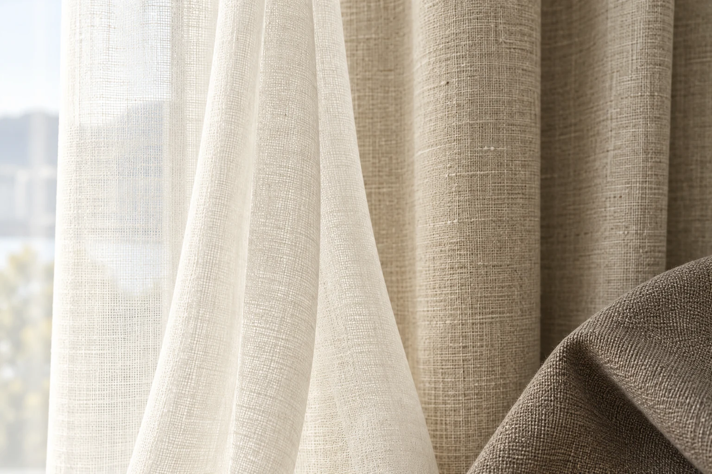
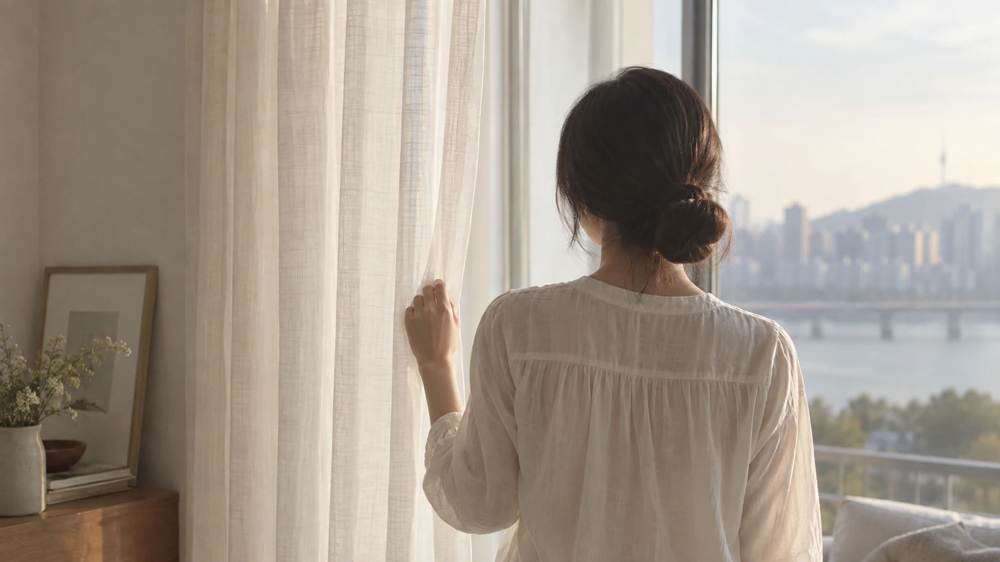
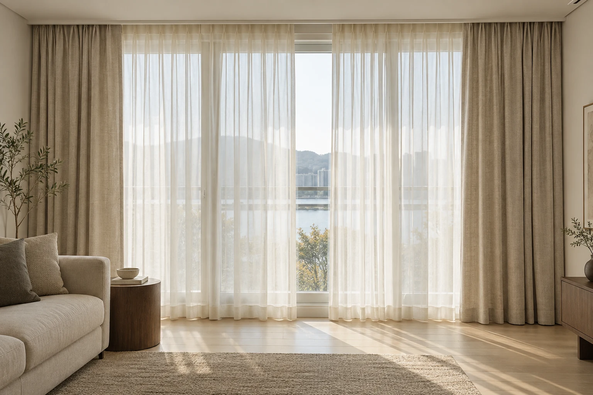
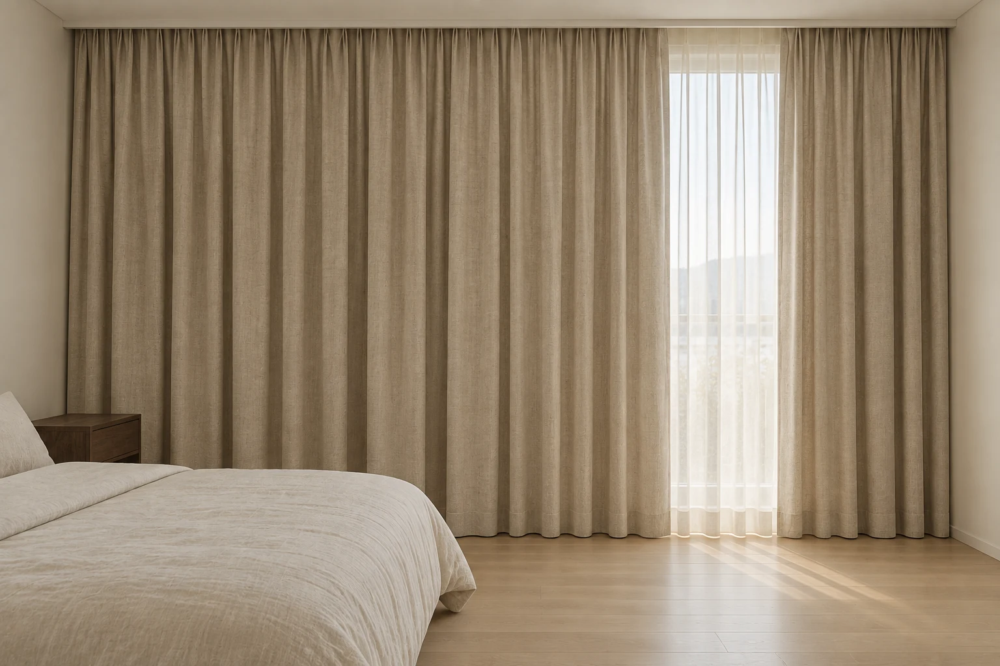
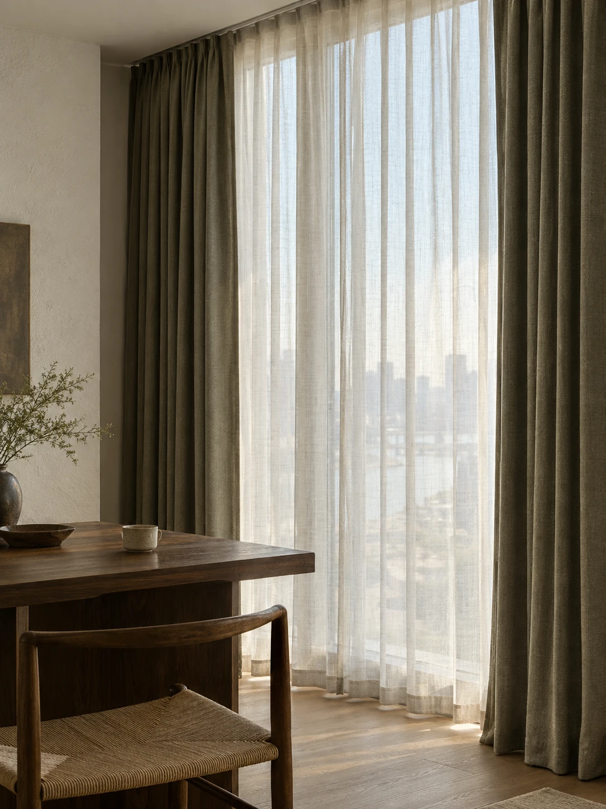
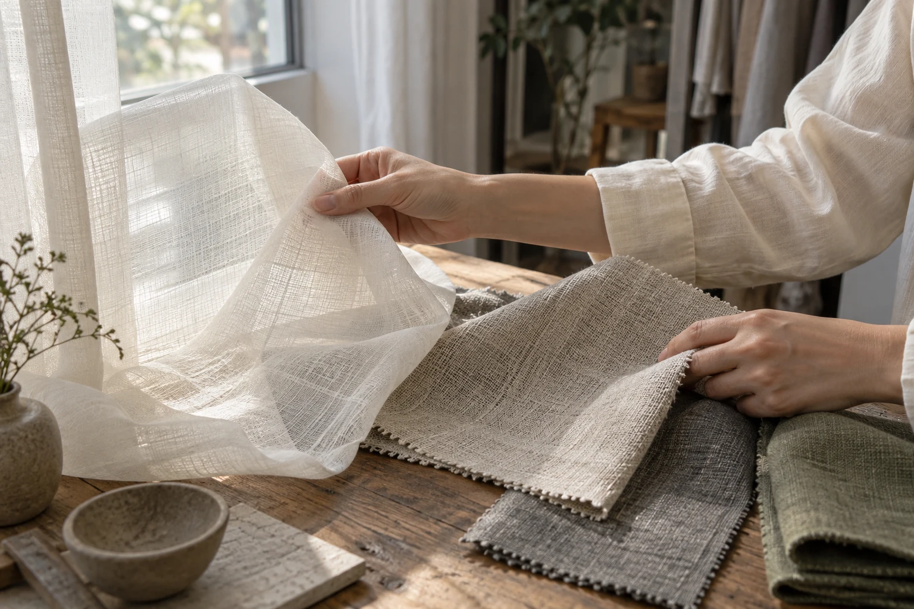

쉬어 커튼



낮의 빛을 부드럽게
비침과 질감, 창에 걸었을 때의 주름을 살펴보세요.
1 / 6



커튼은 원단의 색만으로 고르기 어렵습니다. 창의 크기와 방향, 빛을 들이고 싶은 시간부터 살펴봅니다.
원단을 가까이서 보고, 창에 걸린 모습을 함께 생각합니다. 비침과 촉감, 주름과 레일을 하나씩 맞춰 가는 선택을 소개합니다.
제작 안내 보기창 사진과 사용하는 공간을 정리한 뒤, 실측 치수와 원단, 주름과 레일을 확인합니다. 견적과 설치 일정은 제작 전에 함께 살펴봅니다.
상담 준비 보기
샘플을 낮의 빛과 실내 조명 아래에서 비교해 보세요. 소재의 이름과 함께 실제 비침, 두께와 관리 방법을 확인합니다.
원단과 공간 보기SEORAE CURTAIN
창 전체가 보이게
한 걸음 뒤에서 찍어 주세요.
설치할 공간과 창의 사진
대략적인 가로와 세로 길이
빛을 줄이고 싶은 시간
마음에 두고 있는 색과 질감
서래커튼
맞춤 커튼 상담 준비